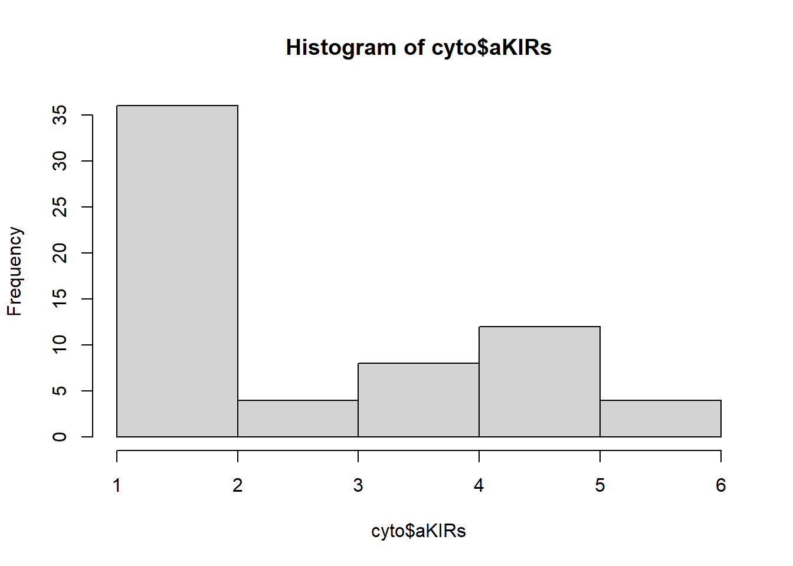

library(tidyverse)
library(gtsummary)
cyto <- get(load(here::here("data","cytomegalovirus.rda")))
cyto$sex_cat <- factor(cyto$sex,
levels = c(0, 1),
labels = c("Female", "Male"))Cytomegalovirus Data Analysis
EPI 590R Final Project, Danning Tian
- Read in raw data
See Table (Table 1) for summary statistics. This data set contains 64 consecutive patients who underwent T-cell replete, matched sibling donor reduced-intensity conditioning allogeneic hematopoietic stem cell transplant. are females. The patients’ diagnosis are carefully noted, including acute myeloid leukemia, non-Hodgkin lymphoma and so on.
- Create a {gtsummary} table of descriptive statistics about your data
cyto1 <- tbl_summary(cyto, by = sex_cat,
include = c(diagnosis.type, TNC.dose, CD34.dose,
aKIRs,TBI.dose, cgvhd, time.to.cgvhd),
label = list(
diagnosis.type ~ "Diagnosis type",
TNC.dose ~ "TNC",
CD34.dose ~ "CD34",
aKIRs ~ "Activating killer immunoglobulin-like receptors",
TBI.dose ~ "TBI",
cgvhd ~ "Precense of cytomegalovirus reactivation",
time.to.cgvhd ~ "Time to cytomegalovirus reactivation"
)) |>
# add a total column with the number of observations
add_overall(col_label = "**Total** N = {N}") |>
bold_labels()
as_gt(cyto1)| Characteristic | Total N = 641 | Female N = 301 |
Male N = 341 |
|---|---|---|---|
| Diagnosis type | 30 (52%) | 15 (54%) | 15 (50%) |
| Unknown | 6 | 2 | 4 |
| TNC | 10.5 (6.9, 13.5) | 11.0 (8.1, 14.6) | 9.9 (5.6, 13.0) |
| CD34 | 5.84 (4.13, 6.99) | 6.69 (5.76, 6.99) | 5.04 (3.58, 6.42) |
| Activating killer immunoglobulin-like receptors | |||
| 1 | 18 (28%) | 9 (30%) | 9 (26%) |
| 2 | 18 (28%) | 8 (27%) | 10 (29%) |
| 3 | 4 (6.3%) | 4 (13%) | 0 (0%) |
| 4 | 8 (13%) | 2 (6.7%) | 6 (18%) |
| 5 | 12 (19%) | 5 (17%) | 7 (21%) |
| 6 | 4 (6.3%) | 2 (6.7%) | 2 (5.9%) |
| TBI | |||
| 200 | 36 (56%) | 20 (67%) | 16 (47%) |
| 400 | 28 (44%) | 10 (33%) | 18 (53%) |
| Precense of cytomegalovirus reactivation | 28 (44%) | 15 (50%) | 13 (38%) |
| Time to cytomegalovirus reactivation | 7 (4, 11) | 7 (4, 17) | 6 (3, 10) |
| 1 n (%); Median (Q1, Q3) | |||
- Fit a regression and present well-formatted results from the regression
tbl_uvregression(
cyto,
y = cgvhd,
include = c(
sex_cat,diagnosis.type, TNC.dose, CD34.dose,aKIRs,TBI.dose
),
method = glm,
method.args = list(family = binomial()),
exponentiate = TRUE
)| Characteristic | N | OR | 95% CI | p-value |
|---|---|---|---|---|
| sex_cat | 64 | |||
| Female | — | — | ||
| Male | 0.62 | 0.23, 1.67 | 0.3 | |
| diagnosis.type | 58 | 0.28 | 0.09, 0.80 | 0.021 |
| TNC.dose | 64 | 0.97 | 0.86, 1.09 | 0.6 |
| CD34.dose | 64 | 1.20 | 0.91, 1.63 | 0.2 |
| aKIRs | 64 | 0.99 | 0.73, 1.32 | >0.9 |
| TBI.dose | 64 | 1.00 | 0.99, 1.00 | 0.10 |
| Abbreviations: CI = Confidence Interval, OR = Odds Ratio | ||||
- Create a figure
hist(cyto$aKIRs)

- Write and use a function that does something with the data
#Function that calculate the identify whether a patient's time to transplant is below or above the average time to transplant.
average_idf <- function(x, na.rm = TRUE){
meantime <- mean(cyto$time.to.transplant, na.rm = TRUE)
if (na.rm) {
x <- na.omit(x)
}
idf <- ifelse(x >= meantime,
"More than or Equal to the meantime",
"Less than the meantime")
return(idf)
}
#Function application example
print("The time to transplant of the first 5 patients:")[1] "The time to transplant of the first 5 patients:"average_idf(cyto$time.to.transplant[1:5])[1] "Less than the meantime" "More than or Equal to the meantime"
[3] "More than or Equal to the meantime" "More than or Equal to the meantime"
[5] "Less than the meantime" - Inline R code in at least 2 places, 1 pulling a statistic from a table (i.e., using gtsummary::inline_text()) and 1 printing something else (like we did with the mean age in the example)
gtsummary::inline_text(cyto1, variable = "TNC.dose", column = "stat_1")[1] "11.0 (8.1, 14.6)"low.TBI.dose <- inline_text(cyto1, variable = "TBI.dose",
level = "200",
column = "stat_0")
presence.cyto <- inline_text(cyto1, variable = "cgvhd",
column = "stat_0")Among all patients, 36 (56%) have low TBI dose, and presence.cyto suffered from cytomegalovirus reactivation.